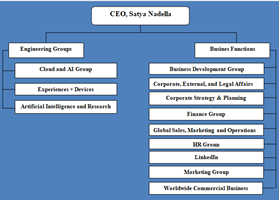

How is the organisation financed?
The 2018 fiscal saw the firm deliver total revenue of $110.4 billion with operating costs and dividend payments accounting for $35.1 and $21.5 billion respectively.
Who monitors the financial operations of the company and how is it done?
Current CEO Satya Nadella monitors financial operations as do shareholders, however, given the firms size, Microsoft employes a team of financial managers to manage the firm's finance.
What is the organisation’s gross turnover per year?
Microsoft turned over $110.4 in gross total revenue for the 2018 fiscal.
What percentage of profits are allocated to research and development?
During the 2018 fiscal year Microsoft spent $14.7 billion on research and development, amounting to 13% of the firms revenue.
What else is done with profits?
Profits are used to finance dividend payments, investments and operating costs.
What is the current management structure?
Microsoft is management with complex structure of teams and individuals delegating roles to others employed within the firm.
How are management decisions made?
Management decisions are made based on the needs and wants of the firm both for the present and future. These decisions are influenced by the direction the CEO and shareholders want the company to take as well as taking into account the concerns and wants of the firms different segments.